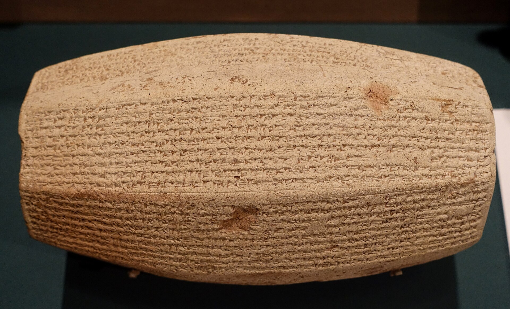

Veintisiete mil doscientas noventa personas. La cifra está tallada en piedra. Lo que falta es el denominador.
Hay dos fechas para la caída de Samaría, y no compiten entre sí. Verlas como alternativas —722 o 720— es el primer malentendido que conviene deshacer, porque en cuanto se ordenan los acontecimientos las dos resultan necesarias.
La reconstrucción que la investigación describe hoy como de amplio consenso, derivada del trabajo de Hayim Tadmor, tiene tres tiempos. Salmanasar V sitió Samaría y la tomó antes del 722 a.C., tras un asedio que la Biblia cifra en tres años. Salmanasar murió en 722, y en el vacío de poder que dejó su muerte la ciudad se rebeló. Sargón II reprimió la revuelta, reorganizó el territorio como provincia asiria en 720, y se atribuyó la conquista en sus inscripciones.
Así que 722 es el final efectivo del reino, y 720 la reconquista y la provincialización. Escribir «722/720» y explicar por qué son dos no es una vacilación: es el dato.
Que Sargón se apropiara del mérito no es una conjetura moderna. Sus inscripciones más antiguas no mencionan Samaría en su primer año; la atribución aparece en redacciones posteriores. Tadmor y, más recientemente, Shawn Zelig Aster lo explican como ideología escribal, con una formulación que merece la pena retener: las inscripciones asirias no inventan una realidad alternativa, seleccionan elementos de la realidad.
Hay una posición minoritaria —Sung Jin Park— que propone una sola conquista bajo Salmanasar V hacia 725, con Sargón como general que después usurpó el trono y el crédito. Y hay una complicación filológica menor: la lectura del topónimo en la Crónica Babilónica ABC 1 podría no ser «Samaría». Ninguna de las dos altera el cuadro general.
Lo que sí lo altera, y en una dirección incómoda para el propio Sargón, es la arqueología. Sus inscripciones proclaman que repobló la ciudad. Las excavaciones de Samaría no muestran ni expansión ni repoblación masiva bajo dominio asirio. El crecimiento poblacional que se detecta en la provincia está en la zona suroeste, junto a la ruta principal, no en la capital. Es uno de los pocos casos en que se puede pillar a un imperio exagerando y demostrarlo con un plano de excavación.

De las deportaciones asirias tenemos números concretos, lo que es excepcional para el mundo antiguo. Tiglat-pileser III, en sus campañas de 734 a 732, registra del orden de trece mil quinientas personas de la región de Galilea, en cifras parciales y en parte restauradas por los editores. Sargón II, en la Gran Inscripción de Exhibición, da veintisiete mil doscientas noventa deportadas de Samaría, con una variante de veintisiete mil doscientas ochenta en el Prisma de Nimrud.
El problema de las cifras no es que sean falsas. Es que una cifra sola no significa nada. Veintisiete mil personas es una catástrofe o una fracción menor según cuántas hubiera, y ese denominador no está en ninguna inscripción: hay que reconstruirlo con superficie habitada y densidad supuesta. Vale la pena ver las dos magnitudes juntas.
Lo que la cuadrícula deja ver es que la deportación fue real, brutal y minoritaria a la vez, y que las tres cosas son compatibles. Se llevaron entre un dieciséis y un veinte por ciento de la población, y se llevaron a la parte que decidía: funcionarios, militares, escribas, artesanos especializados, la casa real. La mayoría campesina se quedó donde estaba, en la nueva provincia asiria de Samerina, cultivando las mismas laderas.
Aquí conviene ir despacio, porque es el punto donde la divulgación se desboca. La expresión «las diez tribus perdidas» ha alimentado durante siglos una literatura entera de identificaciones —con pueblos europeos, americanos, centroasiáticos— que no tiene ninguna base académica. No hace falta dedicarle más espacio que esa frase.
Lo interesante es por qué la idea funcionó tan bien. Y funcionó porque describe algo que sí ocurrió: una identidad colectiva desapareció. Solo que no desapareció por deportación, sino por disolución, y la explicación es una diferencia de política imperial que se ve mejor por contraste.
Asiria dispersaba. Ido Koch lo ha formulado con claridad: la práctica asiria consistía en repartir a los deportados en grupos pequeños por territorios distantes del imperio, mezclados con otras poblaciones trasladadas, precisamente para que no pudieran reconstituirse como grupo. Babilonia, siglo y medio más tarde, hará lo contrario: mantendrá a los judaítas agrupados en asentamientos identificables, con sus propios nombres y su propia onomástica.
De ahí una de las asimetrías más consecuentes de toda esta historia: el destierro babilónico produjo el judaísmo, y el destierro asirio no produjo nada. No porque los israelitas del norte fueran menos tenaces, sino porque a unos los pusieron juntos y a otros los repartieron. Cuando lleguemos al episodio séptimo, con las tablillas de los deportados judaítas en Babilonia, esta comparación volverá a aparecer, y entonces se verá completa.
El reino del norte deja de existir, pero no se evapora. Jerusalén y Judá crecen de forma marcada en el siglo VIII: se ocupa la Colina Occidental, se construye el Muro Ancho, se densifican la Sefelá y el Néguev. La explicación clásica es una oleada de refugiados del norte, y con ella un salto en la estatalidad judaíta, en la alfabetización y en el repertorio de tradiciones: Jacob, el Éxodo, Oseas, incorporados al corpus del sur.
Es una hipótesis atractiva y hoy está más contestada que hace veinte años. Merece verse el desacuerdo entero, porque es un buen ejemplo de cómo se corrige una idea sin demolerla.
Broshi la formula en 1974 y Finkelstein la desarrolla: la oleada del norte tras 732 y 720 multiplica la población de Jerusalén, impulsa la estatalidad de Judá y trae consigo tradiciones israelitas que se incorporan al corpus judaíta.
Los nombres teofóricos típicos del norte disminuyen en Judá a finales del siglo VIII en vez de aumentar; la inscripción de Siloé refleja lengua jerosolimitana; en la Sefelá hay continuidad total de cultura material judaíta y ni un fragmento norteño. Propone crecimiento natural y desplazados de las ciudades que arrasó Senaquerib en 701.
Estima la población de Jerusalén en torno a ocho mil habitantes, frente a las cifras de doce mil a veintiséis mil que maneja la hipótesis de los refugiados. Con ocho mil, el crecimiento no requiere ninguna explicación extraordinaria.
En 2024 se publicó en PNAS la primera serie masiva de radiocarbono del Hierro de Jerusalén: más de cien fechas con microarqueología. Los resultados desplazan varias piezas del cuadro. La ciudad ya se expandía hacia el oeste en el siglo IX, posiblemente antes; la Torre del Manantial y el Pasaje Fortificado del Gihón son del siglo IX y no del Bronce Medio; se detecta un terremoto de mediados del siglo VIII; y la Fortificación de Media Ladera se reasigna al horizonte de Uzías, no al de Ezequías. Consecuencia: la expansión de Jerusalén deja de ser un fenómeno súbito y monocausal de finales del siglo VIII, lo que debilita la versión fuerte de la hipótesis de los refugiados. Finkelstein publicó ese mismo año una réplica metodológica: la mayoría de las muestras proceden de rellenos y preparados de suelo, contextos expuestos al efecto de fechas antiguas. El debate está activo. Se presenta aquí como novedad relevante, no como palabra final.
Sea cual sea la proporción exacta de norteños en la Jerusalén del siglo VII, hay algo que no depende de esa discusión: a partir del 720 a.C., solo queda un reino para contar la historia de los dos. Y ese reino es el pequeño, el montañoso, el que había sido periferia. La entrega siguiente cuenta lo que le pasó veinte años después, cuando el mismo imperio que había borrado a su vecino se plantó ante sus murallas.
Sobre la doble fecha y la ideología escribal de Sargón: H. Tadmor, «The Campaigns of Sargon II of Assur», JCS 12 (1958), y S. Z. Aster, «Sargon II and Samaria», JAOS 139/3 (2019), de donde procede la observación de que las cifras corresponden al conjunto del reino y no a la ciudad. La posición minoritaria de una sola conquista, en S. J. Park, Biblica 93 (2012).
Las estimaciones demográficas de referencia, en M. Broshi e I. Finkelstein, «The Population of Palestine in Iron Age II», BASOR 287 (1992). Sobre la política asiria de dispersión frente a la babilónica de agrupación, los trabajos de I. Koch (Universidad de Tel Aviv).
Sobre la hipótesis de los refugiados: I. Finkelstein, RB 115 (2008) y su respuesta de 2015; N. Naaman, «Dismissing the Myth of a Flood of Israelite Refugees in the Late Eighth Century BCE», ZAW 126 (2014). El radiocarbono de Jerusalén: Y. Regev, J. Uziel, E. Boaretto et al., PNAS 121 (2024), con la réplica de I. Finkelstein de mayo de 2024.